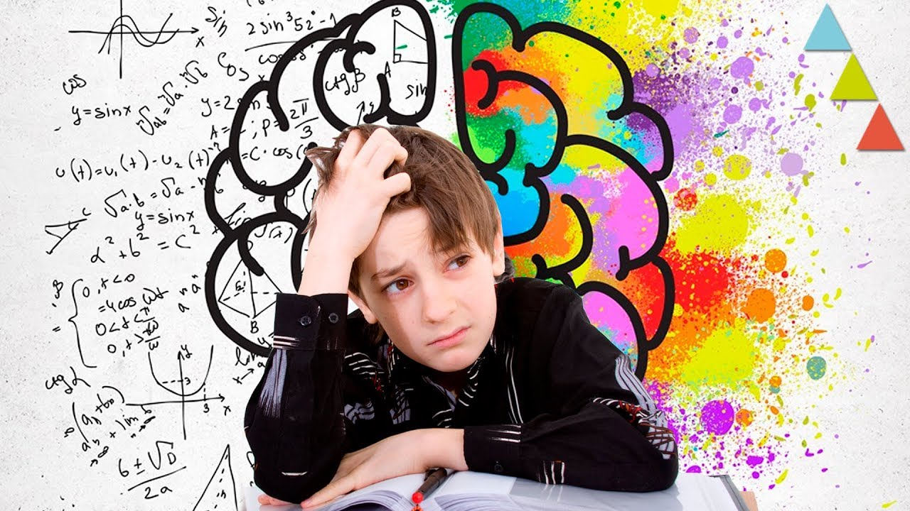

TDAH: O que é?
O que significa e o que é:
TDAH(transtorno do déficit de atenção com hiperatividade) é um transtorno genético, que causa falta de atenção, impulsividade e ansiedade na maioria das vezes. Quase sempre aparece durante a infância e pode afetar a pessoa pelo resto da vida.
Muitas vezes a doença é descoberta durante a vida adulta, ou até mesmo quando velho. Crianças, adolescentes e adultos com TDHA muita das vezes tem dificuldade para organizar trabalhos, compromissos ou até relacionamentos. (ABREU; FONSECA, 2022)
Dislexia: O que é?
O que é:

Dislexia, é um transtorno que afeta na hora da leitura e soletração das palavras. Indivíduos com dislexia por sua vez tem dificuldade em falar, não conseguir relacionar letras e sons, erros constantes na hora da escrita, grande dificuldade no estudo e por muitas vezes dificuldade em localização de esquerda e direita. (TENORIO; PINHEIRO, 2018)
Como lidar?
A melhor forma de se lidar com ambos os transtornos é descobri-las precocemente, se não a melhor saída é ajuda com tratamento psicológico. Não existe uma cura, porém não é impossível ter uma vida normal, como por exemplo criando estratégias para lidar com os problemas de atenção ou associação. Por esse motivo a terapia é muito importante.
É aconselhado para os pais estimular os filhos a estimular/gastar essa energia através de pinturas, instrumentos musicais ou até mesmo praticar esportes. (TENORIO; PINHEIRO, 2018. ABREU; FONSECA, 2022. ABDA; ESCOLAS DO BEM, 2022)
Curiosidades:
O TDHA pode ser considerado/classificado em três subtipos, como, predominantemente desatento, predominantemente hiperativo/impulsivo e combinado de acordo com os sintomas.
A dislexia também apresenta níveis de dificuldade como, leve, moderada e severa, se baseando no nível de dificuldade apresentado.
A maior causa na maioria das vezes é o fator genético dentro da família, porém é dito que em relação a fatores de “fora” é possível que até mesmo estresses maternos possam aumentar o risco do desenvolvimento desses transtornos. (ABDA; ESCOLAS DO BEM, 2022)
Referências bibliográficas
TENORIO, Goretti; PINHEIRO, Chloé. O que é dislexia: causa, sintomas, diagnóstico e tratamento. Disponivel em https://saude.abril.com.br/medicina/o-que-e-dislexia-causa-sintomas-diagnostico-e-tratamento/ (2018). Acesso em 05 abr 2022.
ABDA. O que é TDAH. Disponível em: https://tdah.org.br/sobre-tdah/o-que-e-tdah/ Acesso em: 05 abr 2022.
ABREU, Marcia; FONSECA, Andressa. Curiosidades sobre o TDAH. Revista Saúde. Disponível em: https://rsaude.com.br/cuiaba/materia/curiosidades-sobre-o-tdah/8101. Acesso em: 05 abr. 2022.
ESCOLAS DO BEM. Dislexia: 5 curiosidades sobre transtorno de aprendizagem. Disponível em: https://escolasdobem.com.br/rascunho-automatico-5-curiosidades-sobre-transtorno-de-aprendizagem/. Acesso em: 05 abr. 2022.